v ggplot2 3.4.4 v purrr 1.0.1
v tibble 3.2.1 v dplyr 1.1.2
v tidyr 1.2.0 v stringr 1.4.0
v readr 2.1.2 v forcats 0.5.1
-- Conflicts ------------------------------------------ tidyverse_conflicts() --
x dplyr::filter() masks stats::filter()
x dplyr::lag() masks stats::lag()
library(quantmod)
Loading required package: xts
Loading required package: zoo
Attaching package: 'zoo'
The following objects are masked from 'package:base':
as.Date, as.Date.numeric
######################### Warning from 'xts' package ##########################
# #
# The dplyr lag() function breaks how base R's lag() function is supposed to #
# work, which breaks lag(my_xts). Calls to lag(my_xts) that you type or #
# source() into this session won't work correctly. #
# #
# Use stats::lag() to make sure you're not using dplyr::lag(), or you can add #
# conflictRules('dplyr', exclude = 'lag') to your .Rprofile to stop #
# dplyr from breaking base R's lag() function. #
# #
# Code in packages is not affected. It's protected by R's namespace mechanism #
# Set `options(xts.warn_dplyr_breaks_lag = FALSE)` to suppress this warning. #
# #
###############################################################################
Attaching package: 'xts'
The following objects are masked from 'package:dplyr':
first, last
Loading required package: TTR
Registered S3 method overwritten by 'quantmod':
method from
as.zoo.data.frame zoo
The following objects are masked from 'package:base':
date, intersect, setdiff, union
library(reticulate)
Let’s quickly retrieve the daily stock price ranges for the indices:
spyIn <- quantmod::getSymbols("SPY", from =as.Date("2021/01/01"), to =as.Date("2023/09/30"), periodicity ="daily", src ="yahoo", auto.assign =FALSE)qqqIn <- quantmod::getSymbols("QQQ", from =as.Date("2021/01/01"), to =as.Date("2023/09/30"), periodicity ="daily", src ="yahoo", auto.assign =FALSE)iwmIn <- quantmod::getSymbols("IWM", from =as.Date("2021/01/01"), to =as.Date("2023/09/30"), periodicity ="daily", src ="yahoo", auto.assign =FALSE)spyIn$spyRange <- (spyIn$SPY.High - spyIn$SPY.Low)/ spyIn$SPY.OpenqqqIn$qqqRange <- (qqqIn$QQQ.High - qqqIn$QQQ.Low)/ qqqIn$QQQ.OpeniwmIn$iwmRange <- (iwmIn$IWM.High - iwmIn$IWM.Low)/ iwmIn$IWM.Open
Now, let’s gather the VIX data, since it is also treated like a stock price, and should be available from the same package
vixIn <- quantmod::getSymbols("^VIX", from =as.Date("2021/01/01"), to =as.Date("2023/09/30"), periodicity ="daily", src ="yahoo", auto.assign =FALSE)
Warning: ^VIX contains missing values. Some functions will not work if objects
contain missing values in the middle of the series. Consider using na.omit(),
na.approx(), na.fill(), etc to remove or replace them.
vixIn$dailyChange <- vixIn$VIX.Close -lag(vixIn$VIX.Close)# 8 is vixIn$VIX.Close# 9 is vixIn$dailyChange#vixIn <- vixIn %>% # mutate(date = ymd(index(vixIn)))head(vixIn)
Warning: There was 1 warning in `mutate()`.
i In argument: `DAMAGE_PROPERTY = as.numeric(DAMAGE_PROPERTY)`.
Caused by warning:
! NAs introduced by coercion
Now, we can combined all of these datasets into one dataframe, joining on the date columns
# Convert TS objects to df, and fix the date columnvixDF <-data.frame(vixIn)vixDF$date <-ymd(index(vixIn))spyDF <-data.frame(spyIn)spyDF$date <-ymd(index(spyIn))qqqDF <-data.frame(qqqIn)qqqDF$date <-ymd(index(qqqIn))iwmDF <-data.frame(iwmIn)iwmDF$date <-ymd(index(iwmIn))# Join symbols togethertickers <-left_join(spyDF, vixDF, by ='date')tickers <-left_join(tickers, qqqDF, by ='date')tickers <-left_join(tickers, iwmDF, by ='date')# Join weather datacombinedData <-left_join(tickers, weather_merged, by =c("date"="realdate"))# Join Bond YieldscombinedData <-left_join(combinedData, yieldCurve, by =c("date"="Date"))# Join Labor DatacombinedData <-left_join(combinedData, workerDF, by ='date')head(combinedData)
This model is selected based on the literature review, which suggested that weather events and investor expecations could affect stock prices. This is the “kitchen sink” model, where I am throwing in variables from all data sources. However, looking at the variables individually, such as daily property damage vs. SPY daily price range, we don’t nessecarily see clear correlation (see plot below which resembles white noise). But I am interested to see how these variables are related when taking many different contextual factors into account in the same model.
ggplot(combinedData, aes(x =log(spyRange), y =log(pdam)) ) +geom_point() +labs(title ="3 Month Interest Rate Changes vs. VIX Change ", x ="Log SPY Daily Spread", y ="Log Property Damage From Storms")
Model 2: (VAR) SPY ~ Interest Rate 3-Months + Daily VIX Value
This model is based on a belief that there is an interrelationship between VIX prices and bond yields. This is because both would increase and decrease based on investor expectations for macroeconomic performance in upcoming months. If investors feel the economy will perform poorly, then this might predict bond yields lowering, as well as increased volatility which would be reflected by increases in the VIX. We also see a weak linear correlation in these daily values, as pictured in the plot below.
ggplot(combinedData, aes(x = mo3delta, y = dailyChange ) ) +geom_point() +labs(title ="3 Month Interest Rate Changes vs. VIX Change ", x ="Change in 3-Month Interest Rates", y ="Change in VIX Price")
This model is all about exogenous shocks. New strikes beggining and hurricane warnings are infrequent but extreme events, which have been grouped together with short-term interest rates (3 month window) to try and capture extreme-but-short-termm influences on volatility.
Model 4: (ARIMAX) QQQ ~ All Interest Rates + All Extreme Weather Events + Daily VIX Change + Daily Striking Workers
Models 4 and 5 follow the same logic as model 1, being selected based off of the literature review, but looking at QQQ as oppposed to SPY to see whether large-cap tech companies are more likely to be affected by this kind of volatility.
Model Selection
In this section, I will begin by identifying the candidate model structures for each of the 5 overarching models outlined above. I will identify candidate models through auto.arima for ARIMAX models, plus hand-selected values. For VAR models, I will identify 2 candidates for each overall model with the autoVAR function.
Fitting models using approximations to speed things up...
Regression with ARIMA(2,1,2) errors : 1599.925
Regression with ARIMA(0,1,0) errors : 1880.267
Regression with ARIMA(1,1,0) errors : 1699.179
Regression with ARIMA(0,1,1) errors : 1616.148
Regression with ARIMA(0,1,0) errors : 1878.238
Regression with ARIMA(1,1,2) errors : 1604.247
Regression with ARIMA(2,1,1) errors : 1604.271
Regression with ARIMA(3,1,2) errors : 1599.17
Regression with ARIMA(3,1,1) errors : 1597.175
Regression with ARIMA(3,1,0) errors : 1626.681
Regression with ARIMA(4,1,1) errors : 1591.027
Regression with ARIMA(4,1,0) errors : 1623.139
Regression with ARIMA(5,1,1) errors : 1597.41
Regression with ARIMA(4,1,2) errors : 1593.09
Regression with ARIMA(5,1,0) errors : 1617.939
Regression with ARIMA(5,1,2) errors : Inf
Regression with ARIMA(4,1,1) errors : 1588.981
Regression with ARIMA(3,1,1) errors : 1595.121
Regression with ARIMA(4,1,0) errors : 1621.08
Regression with ARIMA(5,1,1) errors : 1595.37
Regression with ARIMA(4,1,2) errors : 1591.037
Regression with ARIMA(3,1,0) errors : 1624.63
Regression with ARIMA(3,1,2) errors : 1597.106
Regression with ARIMA(5,1,0) errors : 1615.874
Regression with ARIMA(5,1,2) errors : Inf
Now re-fitting the best model(s) without approximations...
Regression with ARIMA(4,1,1) errors : 1592.116
Best model: Regression with ARIMA(4,1,1) errors
checkresiduals(mod1candidate1)
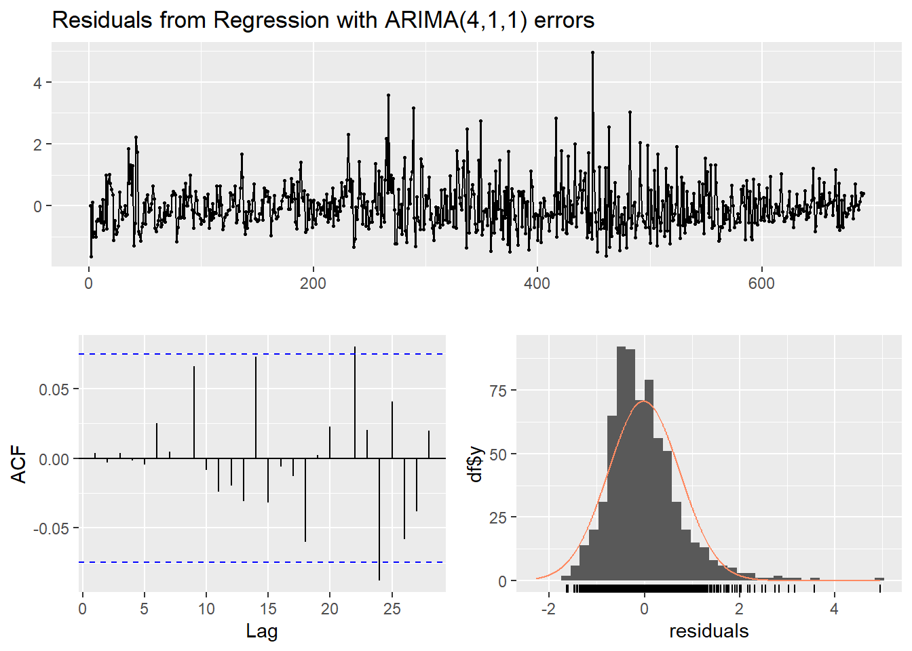
Ljung-Box test
data: Residuals from Regression with ARIMA(4,1,1) errors
Q* = 3.619, df = 5, p-value = 0.6055
Model df: 5. Total lags used: 10
Auto ARIMA picks out the model (4,1,1) for the standardized data. The residual diagnostic plots look good, with the residuals normally distributed.
xMatrix =as.data.frame(xMatrix)# Lets examine the residuals directly to identify mod1candidate2 <-lm(scale(combinedData$spyRange) ~ mo12delta + pdam + dailyChange + workers, data = xMatrix )summary(mod1candidate2)
Call:
lm(formula = scale(combinedData$spyRange) ~ mo12delta + pdam +
dailyChange + workers, data = xMatrix)
Residuals:
Min 1Q Median 3Q Max
-1.5121 -0.7147 -0.2584 0.4739 5.6401
Coefficients:
Estimate Std. Error t value Pr(>|t|)
(Intercept) 1.420e-16 3.766e-02 0.000 1.000000
mo12delta 1.479e-02 3.778e-02 0.392 0.695544
pdam -2.214e-02 3.788e-02 -0.584 0.559186
dailyChange 1.046e-01 3.772e-02 2.772 0.005731 **
workers -1.272e-01 3.791e-02 -3.355 0.000838 ***
---
Signif. codes: 0 '***' 0.001 '**' 0.01 '*' 0.05 '.' 0.1 ' ' 1
Residual standard error: 0.9894 on 685 degrees of freedom
Multiple R-squared: 0.02684, Adjusted R-squared: 0.02116
F-statistic: 4.723 on 4 and 685 DF, p-value: 0.0009156
resid1 <- mod1candidate2$residualspacf(resid1)
acf(resid1)
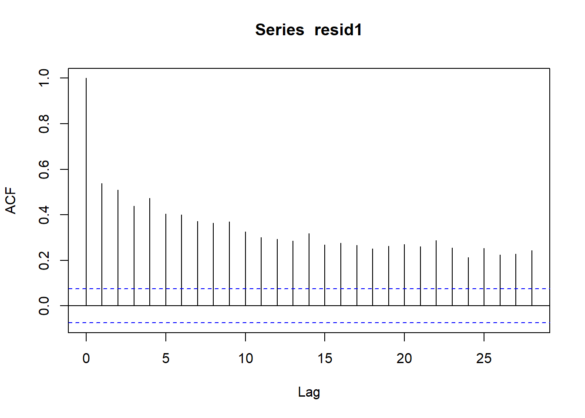
Based on the PACF and ACF of the residuals from the regression, it seems we should definitely difference the series, as we have many significant lag terms in the ACF. On the PACF, we can see 4 terms clearly signfificant. Based on these charts, I might try the model (4,1,0). I will try up through (4,2,2) and look for the lowest aic.
SARIMA.c=function(p1,p2,q1,q2,P1,P2,Q1,Q2,d1,d2,data){temp=c()d=1D=1s=12i=1temp=data.frame()ls=matrix(rep(NA,9*378),nrow=378)for (p in p1:p2) {for(q in q1:q2) {for(P in P1:P2) {for(Q in Q1:Q2) {for(d in d1:d2) {if(p+d+q+P+D+Q<=8) { model<-Arima(data,order=c(p-1,d,q-1),seasonal=c(P-1,D,Q-1)) ls[i,]=c(p-1,d,q-1,P-1,D,Q-1,model$aic,model$bic,model$aicc) i=i+1#print(i) } } } } } } temp=as.data.frame(ls)names(temp)=c("p","d","q","P","D","Q","AIC","BIC","AICc") temp}SARIMA.c(p1=1,p2=5,q1=1,q2=4,P1=1,P2=3,Q1=1,Q2=2,d1=0,d2=1,data=resid1) %>%filter(!is.na(p))
mod1candidate2 <-arima(resid1, order =c(1,0,1), seasonal =list(order =c(0,1,0)))checkresiduals(mod1candidate2)
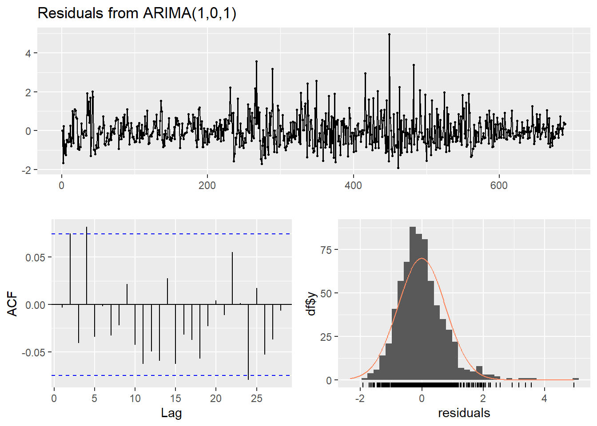
Ljung-Box test
data: Residuals from ARIMA(1,0,1)
Q* = 13.208, df = 8, p-value = 0.1049
Model df: 2. Total lags used: 10
The function to evaluate various p,d,q values returns SARIMA(1,0,1)(0,1,0)[12] with the lowest AIC and BIC. The residuals of this second model show clear correlation around lags 2 and 4, which was not present in the 4,1,0 model that auto arima suggested. So overall, I would say the diagnostics look worse for the second model than the first.
Fitting models using approximations to speed things up...
Regression with ARIMA(2,1,2) errors : 1751.36
Regression with ARIMA(0,1,0) errors : 1999.57
Regression with ARIMA(1,1,0) errors : 1844.166
Regression with ARIMA(0,1,1) errors : 1765.158
Regression with ARIMA(0,1,0) errors : 1997.547
Regression with ARIMA(1,1,2) errors : 1744.072
Regression with ARIMA(0,1,2) errors : 1761.437
Regression with ARIMA(1,1,1) errors : 1749.049
Regression with ARIMA(1,1,3) errors : 1740.657
Regression with ARIMA(0,1,3) errors : 1751.237
Regression with ARIMA(2,1,3) errors : 1748.946
Regression with ARIMA(1,1,4) errors : 1742.521
Regression with ARIMA(0,1,4) errors : 1752.517
Regression with ARIMA(2,1,4) errors : 1749.048
Regression with ARIMA(1,1,3) errors : 1738.675
Regression with ARIMA(0,1,3) errors : 1749.422
Regression with ARIMA(1,1,2) errors : 1742.035
Regression with ARIMA(2,1,3) errors : 1747.358
Regression with ARIMA(1,1,4) errors : 1740.549
Regression with ARIMA(0,1,2) errors : 1759.509
Regression with ARIMA(0,1,4) errors : 1750.738
Regression with ARIMA(2,1,2) errors : 1749.538
Regression with ARIMA(2,1,4) errors : 1747.409
Now re-fitting the best model(s) without approximations...
Regression with ARIMA(1,1,3) errors : 1735.245
Best model: Regression with ARIMA(1,1,3) errors
checkresiduals(mod3candidate1)
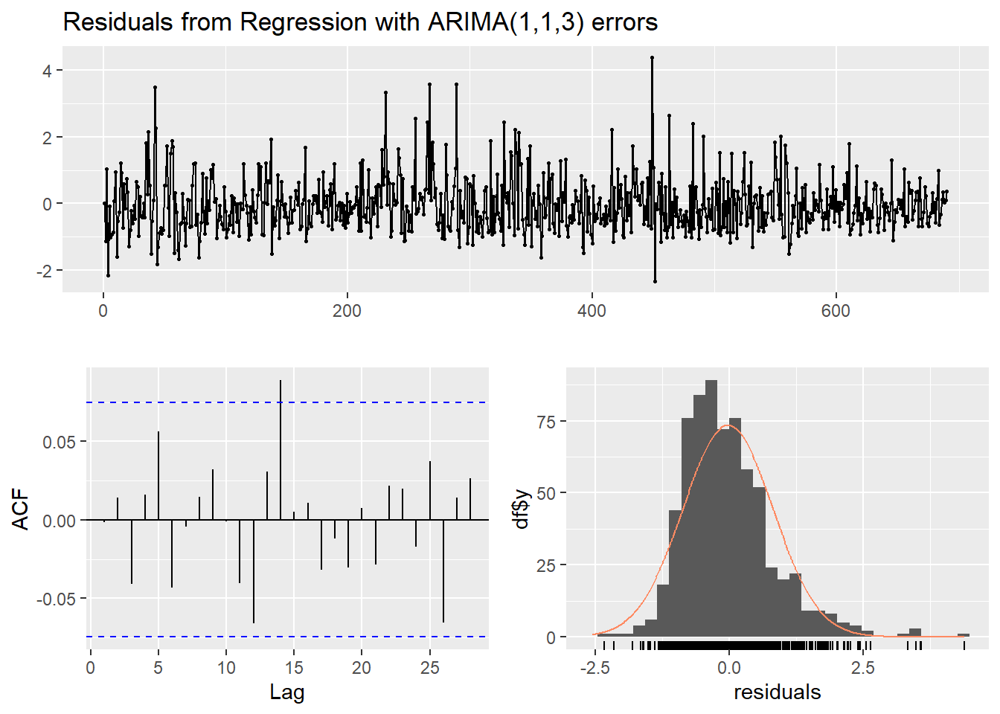
Ljung-Box test
data: Residuals from Regression with ARIMA(1,1,3) errors
Q* = 5.873, df = 6, p-value = 0.4376
Model df: 4. Total lags used: 10
Auto.arima identifies (1,1,3) as the best model. The residuals show a low level of correlation in the lags, which is encouraging, and overall the residuals are mostly normally distributed although they are somewhat skewed to the right. Now, let’s see what we manually select, also considering a SARIMAX model.
Prepare residuals:
xMatrix3 =as.data.frame(xMatrix3)# Lets examine the residuals directly to identify mod3candidate2 <-lm(scale(combinedData$iwmRange) ~ casualties + mo3delta + hurricaneWarnings, data = xMatrix3 )summary(mod3candidate2)
Call:
lm(formula = scale(combinedData$iwmRange) ~ casualties + mo3delta +
hurricaneWarnings, data = xMatrix3)
Residuals:
Min 1Q Median 3Q Max
-1.5534 -0.7062 -0.2568 0.4825 4.7271
Coefficients:
Estimate Std. Error t value Pr(>|t|)
(Intercept) 2.694e-17 3.804e-02 0.000 1.0000
casualties 1.599e-02 3.830e-02 0.418 0.6764
mo3delta -1.079e-02 3.811e-02 -0.283 0.7771
hurricaneWarnings 7.385e-02 3.833e-02 1.927 0.0545 .
---
Signif. codes: 0 '***' 0.001 '**' 0.01 '*' 0.05 '.' 0.1 ' ' 1
Residual standard error: 0.9992 on 686 degrees of freedom
Multiple R-squared: 0.006013, Adjusted R-squared: 0.001666
F-statistic: 1.383 on 3 and 686 DF, p-value: 0.2467
resid3 <- mod3candidate2$residualspacf(resid3)
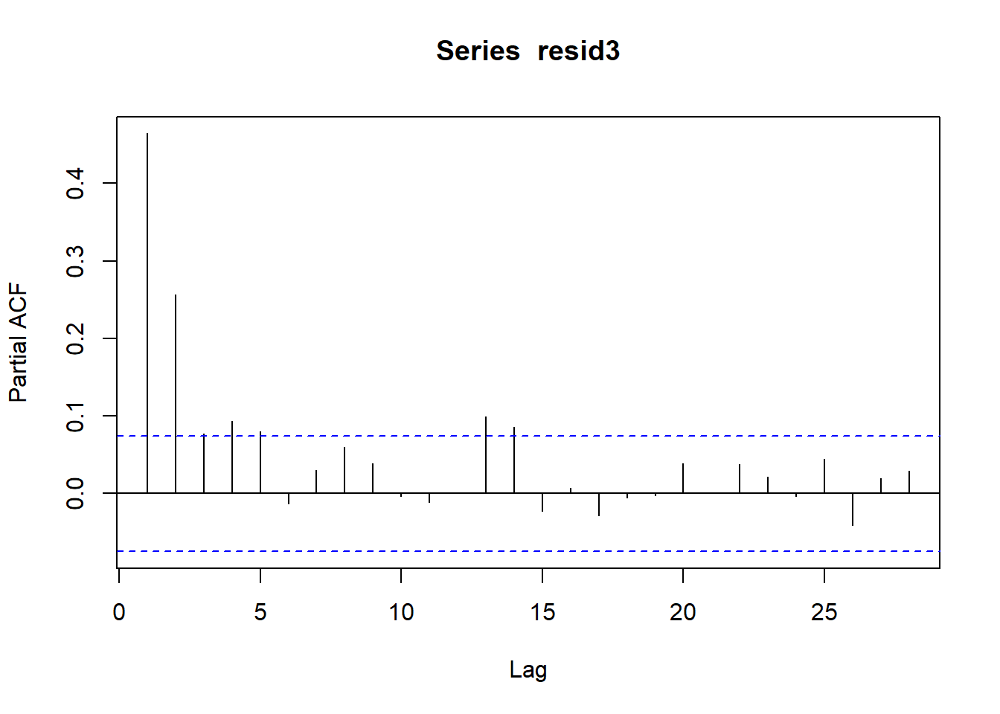
acf(resid3)
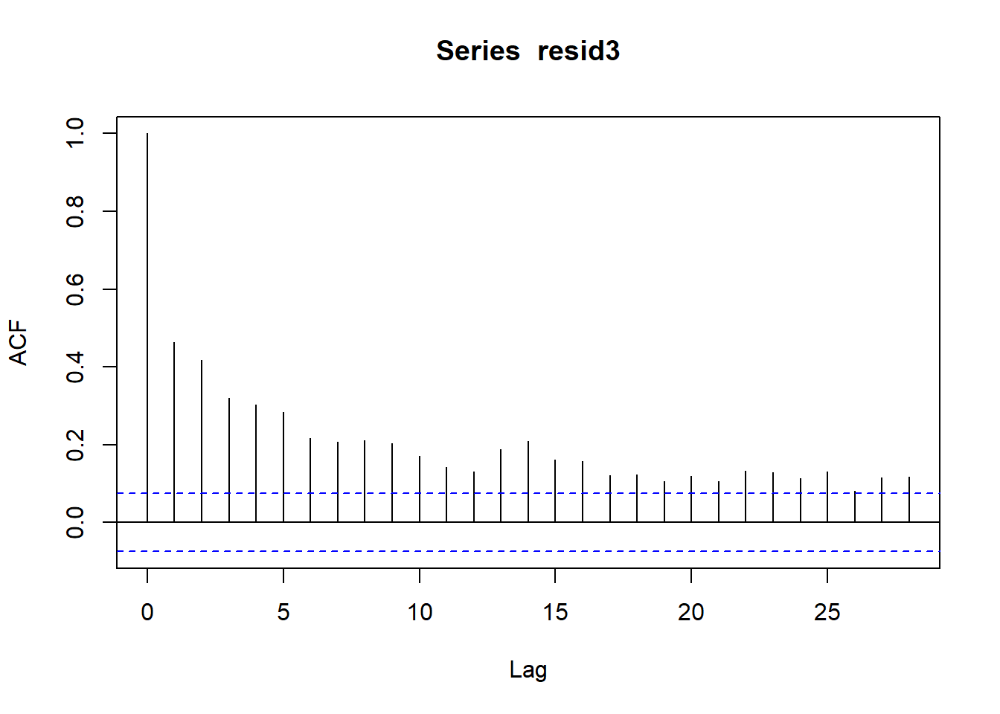
The ACF and PACF plots of the residuals from linear regression are mixed, but there is clear correlation through value 5 in the PACF plot. The ACF plot has many significant terms, suggesting the series should be differenced. Now, I’ll loop through all the options to see if there is a suitable SARIMA model for the residuals:
The best model identified by a small margin is SARIMA(1,0,1)(1,1,0). Let’s check the diagnostics
residualsMod3Can2 <-arima(resid3, order =c(1,0,1), seasonal =list(order =c(1,1,0)))checkresiduals(residualsMod3Can2)
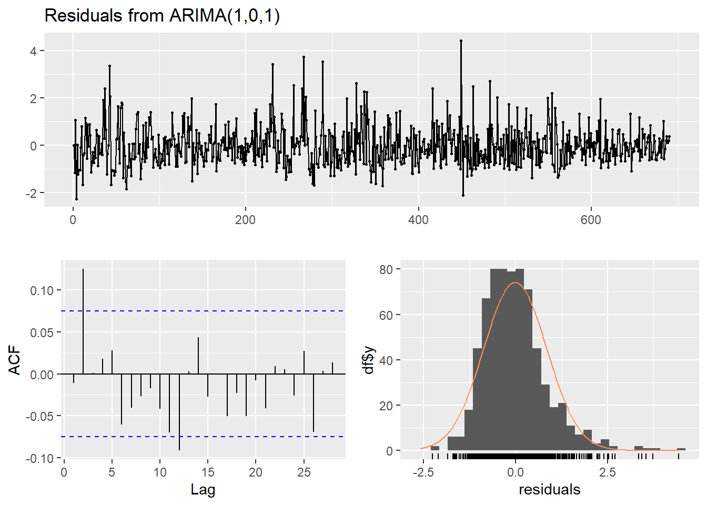
Ljung-Box test
data: Residuals from ARIMA(1,0,1)
Q* = 17.291, df = 8, p-value = 0.02722
Model df: 2. Total lags used: 10
The residuals for this model arent encouraging, as the Ljung Box test returns a p value of 0.03. THe residuals also do not look perfectly normally distributed.
Model 4: (ARIMAX) QQQ ~ All Interest Rates + All Extreme Weather Events + Daily VIX Change + Daily Striking Workers
Fitting models using approximations to speed things up...
Regression with ARIMA(2,1,2) errors : 1646.527
Regression with ARIMA(0,1,0) errors : 1985.591
Regression with ARIMA(1,1,0) errors : 1789.889
Regression with ARIMA(0,1,1) errors : 1653.554
Regression with ARIMA(0,1,0) errors : 1983.547
Regression with ARIMA(1,1,2) errors : 1643.615
Regression with ARIMA(0,1,2) errors : 1655.565
Regression with ARIMA(1,1,1) errors : 1641.759
Regression with ARIMA(2,1,1) errors : 1644.847
Regression with ARIMA(2,1,0) errors : 1723.561
Regression with ARIMA(1,1,1) errors : 1639.7
Regression with ARIMA(0,1,1) errors : 1651.558
Regression with ARIMA(1,1,0) errors : 1787.836
Regression with ARIMA(2,1,1) errors : 1642.787
Regression with ARIMA(1,1,2) errors : 1641.551
Regression with ARIMA(0,1,2) errors : 1653.561
Regression with ARIMA(2,1,0) errors : 1721.502
Regression with ARIMA(2,1,2) errors : 1644.457
Now re-fitting the best model(s) without approximations...
Regression with ARIMA(1,1,1) errors : 1645.163
Best model: Regression with ARIMA(1,1,1) errors
checkresiduals(mod4candidate1)
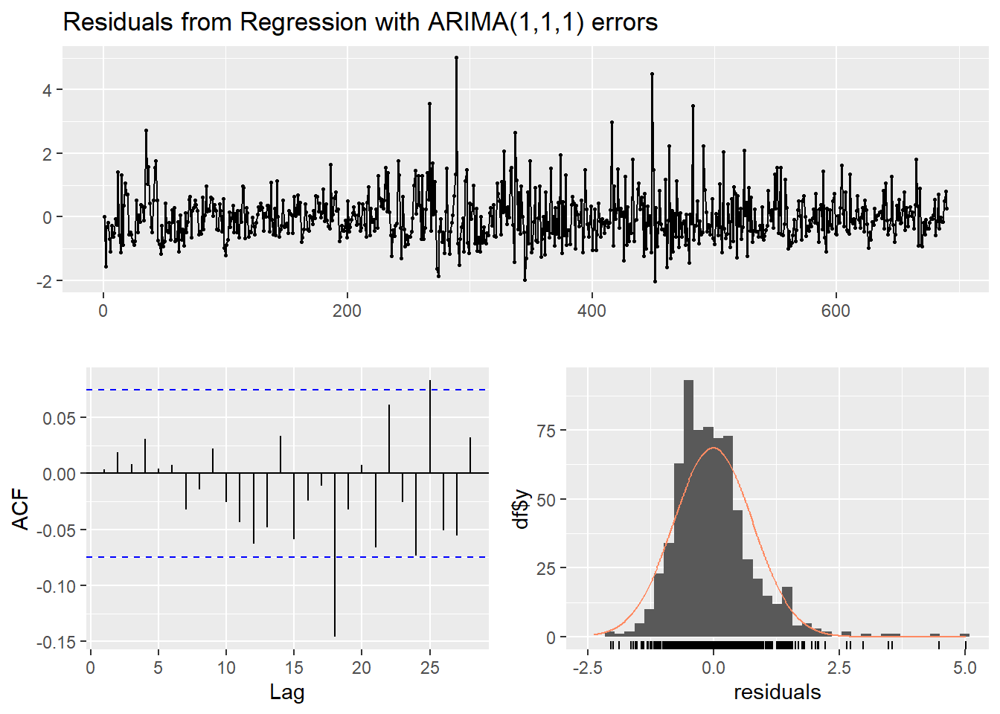
Ljung-Box test
data: Residuals from Regression with ARIMA(1,1,1) errors
Q* = 2.722, df = 8, p-value = 0.9506
Model df: 2. Total lags used: 10
Auto Arima returns (1,1,1). The diagnostics look acceptable, although there is clustered volatility in the residual plot. The Ljung-Box test returns p = 0.95, suggesting there is not autocorrelation in the residuals. However, the residual lag plot has high correlation around lag 20, and the correlation of the residuals slightly increases as the lags get greater.
Now let’s select a candidate manually, including from SARIMA models. First we calculate and review the residuals from the linear regression:
xMatrix4 =as.data.frame(xMatrix4)# Lets examine the residuals directly to identify mod4candidate2 <-lm(scale(combinedData$qqqRange) ~ mo3delta + mo6delta + mo12delta + events + dailyChange, data = xMatrix4 )summary(mod1candidate2)
Call:
arima(x = resid1, order = c(1, 0, 1), seasonal = list(order = c(0, 1, 0)))
Coefficients:
ar1 ma1
0.1099 -0.8103
s.e. 0.0612 0.0446
sigma^2 estimated as 0.6001: log likelihood = -802.16, aic = 1610.32
Training set error measures:
ME RMSE MAE MPE MAPE MASE
Training set -0.008908356 0.7740864 0.5740772 -314.3173 543.1463 0.8413363
ACF1
Training set -0.003214659
resid4 <- mod4candidate2$residualspacf(resid4)
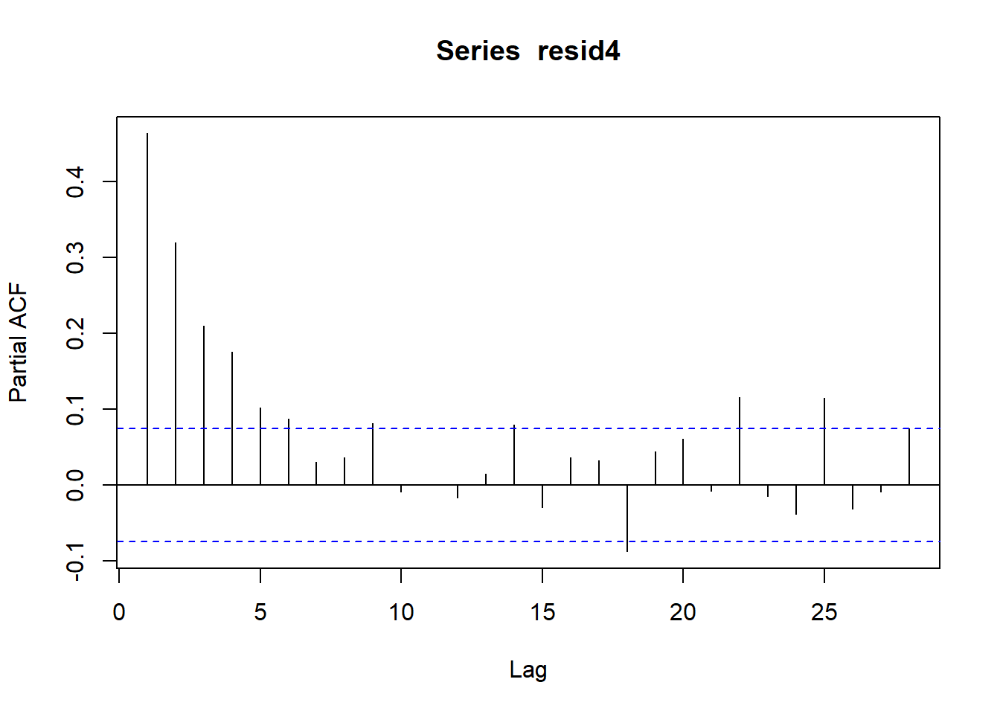
acf(resid4)
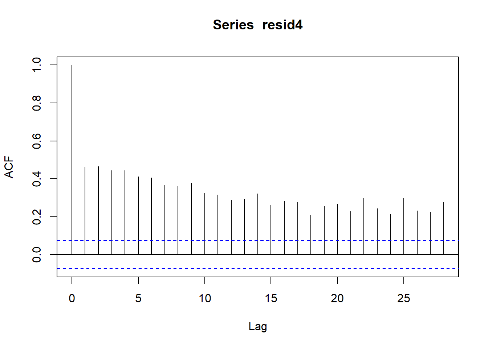
The ACF plot has many significant lags (>10) which suggests we may need to difference the residuals. The PACF plot has high significance through lag 5. Let’s run a function to check all of the values up through p=2 and q=5.
The best AIC and BIC scores returned by the function are for the model SARIMA(1,0,1)(1,1,0). Let’s look at the diagnostic plots to see how well this model captures the data:
mod4candidate2fit =arima(resid4, order =c(1,0,1), seasonal =list(order =c(1,1,0)))checkresiduals(mod4candidate2fit)
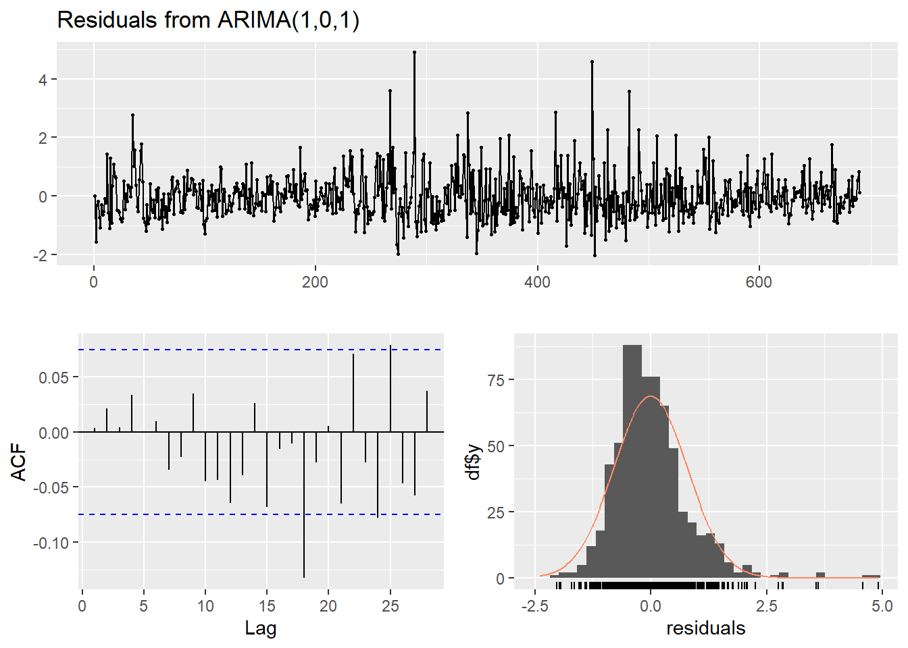
Ljung-Box test
data: Residuals from ARIMA(1,0,1)
Q* = 4.6414, df = 8, p-value = 0.7951
Model df: 2. Total lags used: 10
The residuals for this model look similar to the auto.arima model, so it will be interesting to compare them with cross validation. Otherwise, it is notable that the residuals display clustered volatility, while the lag plot shows significant correlations at some values, although the Ljung-Box test returns 0.795 so we can conclude there is no autocorrelation in the residuals.
I am leaving this model to fit after the homework.
Model Selection for VAR Models
Model 2: (VAR) SPY ~ Interest Rate 3-Months + Daily VIX Value
Step 1, let’s fit VAR with p=1 just to see the relationship between our 3 variables (SPY intraday range, 3-month interest rate changes, and the real daily VIX values).
xMatrix2 = combinedData[,c('VIX.Adjusted', 'mo3delta', 'spyRange') ]xMatrix2[is.na(xMatrix2)] <-0xMatrix2 =scale(xMatrix2)xMatrix2 =as.matrix(xMatrix2)#xMatrixsummary(vars::VAR(xMatrix2, p =1, type ='both'))
The initial VAR fit is encouraging, as the 3 variables are all significant. SPY range has a p value of 0.09, which is slightly above the 0.05 threshold that would be ideal, but still suggests it helps explain the variance in the other variables in the model. The overall R squared and adjusted R squared are also encouraging, at 0.5, which is exceptionally high for a model concerning stock prices.
Now lets use VAR select to identify some preferrable p values.
vars::VARselect(xMatrix2, lag.max =10, type ='both')
VAR select returns either p =5 or p = 1 as the best fits, with AIC and FPE selecting p=5, and HQ and SC selecting p =1. We will use cross validation to compare these options.
Model Evaluation
In this section, I will use cross validation to select the best candidate model for each of the 5 overaching model designs. First, lets define a cross validation function
#######crossVal <-function(arima1order, arima2order, sarima2order, data) {# window is always 1 test <-30 trainnum <-length(data) - test rmse1 <-vector(mode ='numeric', length =30) rmse2 <-vector(mode ='numeric', length =30)for(i in1:30) {#print(trainnum + ((i-1) * 4))#print(trainnum + (i*4))#print(trainnum + ((i-1) * 4) +1) xtrain <- data[c(1:(trainnum + i -1))] xtest <- data[c((trainnum+1):(trainnum+i+1))]######## first Model ############ fit <-arima(xtrain, order = arima1order) fcast <-predict(fit, n.ahead =1)$pred[1]######## second model ########### fit2 <-arima(xtrain, order = arima2order, seasonal = sarima2order) fcast2 <-predict(fit2, n.ahead =1)$pred[1]# Errors rmse1[i] <-sqrt((fcast-xtest[1])^2) rmse2[i] <-sqrt((fcast2-xtest[1])^2) } outputs =data.frame("rmse1"= rmse1, 'rmse2'= rmse2)return(outputs)}
Model 1 (ARIMAX)
Lets test the function out on the first model, comparing ARIMA(4,1,1) vs. SARIMA(1,0,1)(0,1,0) on the residuals of the linear regression.
Between the two models, model 1, selected by auto.arima, beats out the sarima model with a mean RMSE of 0.2690 vs. 0.2696. However, the models do perform similarly to eachother. Let’s look at a graph to make the difference more clear:
index1 =c(1:nrow(model1comparison))ggplot(data = model1comparison, aes(x = index1, y = rmse1), color ='blue') +geom_line() +geom_line(aes(x = index1, y = rmse2), color ='red') +labs(title ='Comparing RMSE of ARIMAX(4,1,1) Black and SARIMAX(1,0,1)(0,1,0) Red')
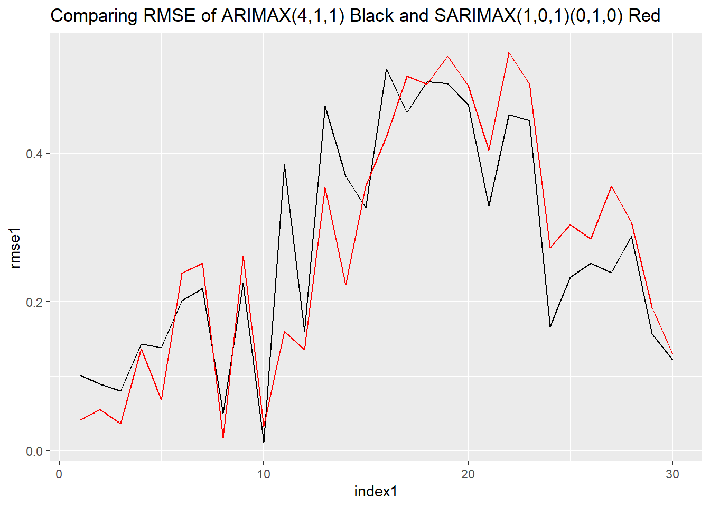
As we can see in the cross-validation chart, the two models perform similarly, and tend to have higher and lower errors at the same time, with both of the models performing poorly near the middle of the cross validation data sets. But overall, the ARIMA (ARIMAX) model performs the best at predicting the residuals. As such, my chosen model for Model 1 is ARIMAX(4,1,1).
Here we can see the models predictions for the SPY daily upcoming range, using auto.arima generated models to predict the external regressors. Overall, the model predicts a precipitous drop in the daily range in SPY prices in the upcoming 10 days.
Let’s compare the model returned by auto.arima, ARIMA(1,1,3), vs the model I found by hand, SARIMA(1,0,1)(1,1,0), on the residuals of the linear regression for model 3.
Once again, the simple ARIMA model beats out the SARIMA architecture in terms of average RMSE. The average for ARIMA(1,1,3) was 0.554, while for SARIMA(1,0,1)(1,1,0) it was 0.601. Let’s look at a plot of the rmse values to see how the models fared:
index3 =c(1:nrow(model3comparison))ggplot(data = model3comparison, aes(x = index3, y = rmse1), color ='blue') +geom_line() +geom_line(aes(x = index3, y = rmse2), color ='red') +labs(title ='Comparing RMSE of ARIMAX(1,1,3) Black and SARIMAX(1,0,1)(1,1,0) Red')
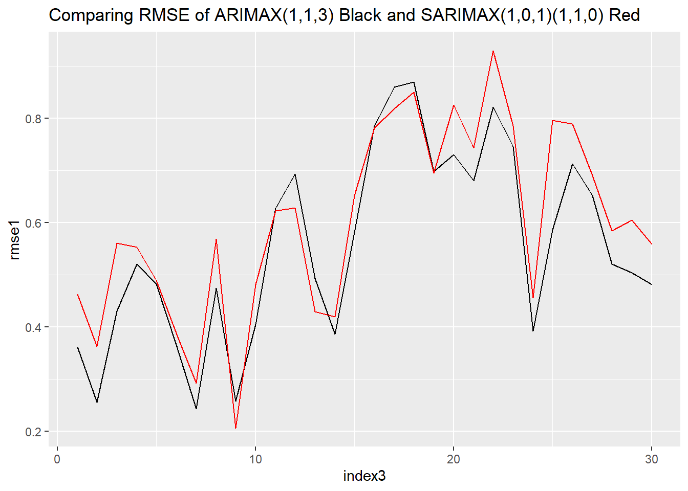
Just like for model 1, the two approaches performed similarly. If one model had a high RMSE for a particular value, the other model was likely to perform poorly as well. Overall however, we can see that for a given value the black line (ARIMA) tended to perform better. In the end, the ARIMAX models seems to fit the data well. As such, my chosen model for Model 3 is: ARIMAX(1,1,3)/.
Here we can see the models predictions for the IWM daily upcoming range, using auto.arima generated models to predict the external regressors. Overall, the model predicts a steep incline in IWM intraday ranges in the upcoming 10 days, especially in the first 5 before leveling off.
Model 4 ARIMAX
Leaving for future work.
Model 5 ARIMAX
Leaving for future work.
Model 2 VAR
Let’s forecast our VAR model, which used 3-month interest rate changes and daily VIX values to predict SPY’s intraday range. For this model we wanted to compare the p values of 1 and 5 to find the best model.
Lets, run our CV function:
data = xMatrix2# window is always 1 test <-30 trainnum <-nrow(data) - test rmse1 <-matrix(NA, 30,3) rmse1 <-data.frame(rmse1) rmse2 <-matrix(NA, 30,3) rmse2 <-data.frame(rmse2)for(i in1:29) { xtrain <- data[c(1:(trainnum + i -1)),] xtest <- data[c((trainnum+i):(trainnum+i+1)),]######## first Model ############ fit <- vars::VAR(xtrain, p =1, type ='both') fcast <-predict(fit, n.ahead =1)$fcst ff<-data.frame(fcast$VIX.Adjusted[,1],fcast$mo3delta[,1],fcast$spyRange[,1])######## second model ########### fit2 <- vars::VAR(xtrain,p =5, type ='both') fcast2 <-predict(fit2, n.ahead =1)$fcst ff2<-data.frame(fcast2$VIX.Adjusted[,1],fcast2$mo3delta[,1],fcast2$spyRange[,1])# Errors rmse1[i,] =sqrt((ff-xtest)^2) rmse2[i,] =sqrt((ff2-xtest)^2) }#print(rmse1)names(rmse1) =c("VIXPrice", "3mo","SPYDailyRange")names(rmse2) =c("VIXPrice", "3mo","SPYDailyRange")colMeans(rmse1, na.rm =TRUE)
After cross validating the 2 VAR models across 30 1-day intervals, we obtain the following average RMSE for the different variables: VIX Price: p=1 -> 0.148, p=5 -> 0.139. 3 Month Interest Rate Changes: p=1 -> 1.109, p=5 -> 1.190. SPY Daily Range: p=1 -> 0.696, p=5 -> 0.682.
Overall, the p=1 VAR model was better at predicting the interest rate changes variable, and the p=5 VAR model performed better on the VIX Price and SPY daily range variables.
Let’s plot their performance:
index2 =c(1:nrow(rmse1))ggplot() +geom_line(data = rmse1, aes(x = index2, y = VIXPrice),color ="blue") +geom_line(data = rmse2, aes(x = index2, y = VIXPrice),color ="red") +labs(title ="CV RMSE for Vix Prices, Blue = (p=1), Red = (p=5)",x ="Date",y ="RMSE",guides(colour=guide_legend(title="Fit")))
Overall, the charts show what we confirmed with the average values: That the mean performance of the p=5 model was better on average.
Now let’s predict:
finalmod2 = vars::VAR(xMatrix2, p =5, type ='both')mod2forecast <-predict(finalmod2, n.ahead =10)$fcstindexmod2 =c(1:10)ggplot() +geom_line(aes(x = indexmod2, y = mod2forecast$spyRange[1:10]),color ="blue") +geom_line(aes(x = indexmod2, y = mod2forecast$mo3delta[1:10]),color ="red") +geom_line(aes(x = indexmod2, y = mod2forecast$VIX.Adjusted[1:10]),color ="green")
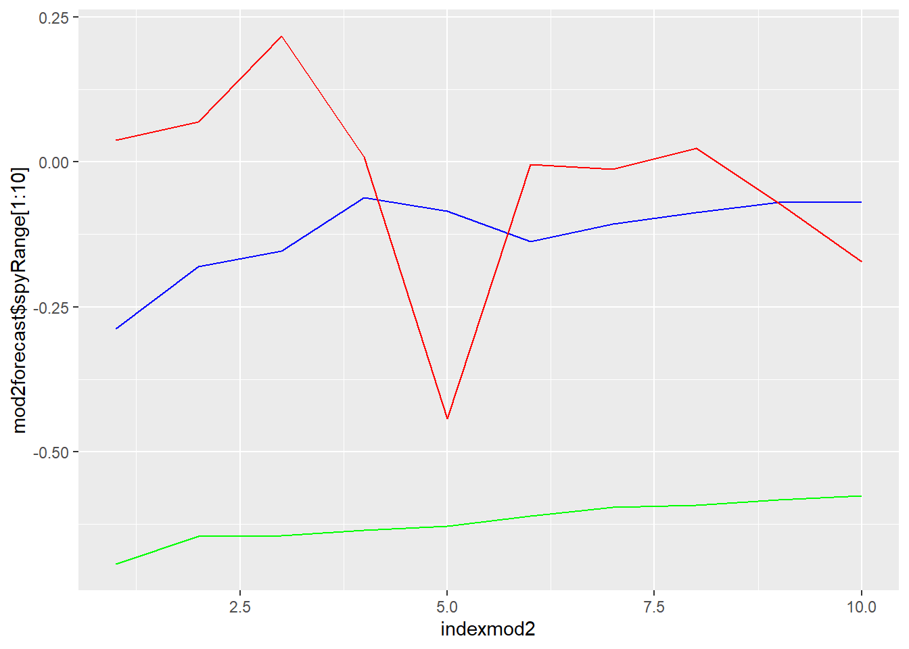
Here we can see the scale forecasts for the 3 key variables, which are created with the predict function for the VAR model with p=5. Overall, the model predicts the SPY range to raise slightly for the next 10 days, and the 3 month interest rates to change sharply.